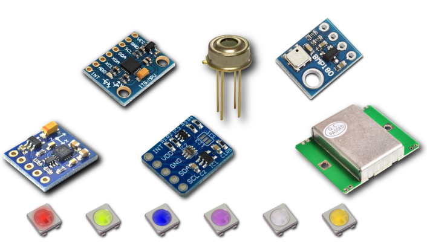

Sensor Logger
Log data from I2C sensors
I2C Sensors supported by ExpEYES so far
- MPU6050 : 3-Axis Accelerometer , 3-Axis GyroScope
- MPU925x : 3-Axis Accelerometer , 3-Axis GyroScope, - Separately enabled 3-axis magnetometer
- HMC5883L : 3-Axis Magnetometer with adjustable ranges
- MLX90614 : Passive IR temperature sensor
- BMP180 : Pressure , Temperature and Altitude module.
- TSL2561 , BH1750 : Luminosity measurements up to 40K Lux
- SHT21 , Si7021 : Ambient Temperature and Humidity Module

Connecting an I2C Sensor

I2C Sensors primarily require four connections
- Vcc : Positive Supply. Check your sensor’s documentation for the rated voltage input. ExpEYES provides 5V on the I2C port since most commercial sensor modules have a built-in voltage regulator.
- GND : Ground / Negative supply
- SCL : Clock for exchanging data
- SDA : Bidirectional data line
The sensor featured in the picture above is the MPU925x , a 10-DOF Inertial measurement unit that can measure 3-Axis acceleration, angular velocity, and magentic fields.
Detecting the presence of a sensor
- Once you have plugged in the sensor, click on the autoScan button which makes the device to detect the presence of any sensors
- If a sensor is detected, and is also supported by the ExpEYES python library, it will automatically update the menu to show a button for that sensor.
- Click on the detected sensor’s name , and you will see a bunch of graphs automatically appear in the
tracessection as well as the legend on the plot. - Select the number of points to record along the x-axis, and start the data logger
An introductory screencast on how to repeat the above instructions. The sensor used is the MPU925x, and it was mechanically oscillated to generate some random data